Components
card.secondary (surfaces) · card.primary with 4 surface variants · group.boundary
Deliverable 06 · Worked canonical examples · light + dark
Each example below ships as a pair: <name>.light.svg + <name>.dark.svg. The two files share layout, components, icons, arrow routes, and labels — only color values, shadow filter bodies, and canvas gradient stops differ. They are the canonical anchors the downstream generator targets: a diagram produced from the same spec should read as a sibling of these.
SKILL.md workflow now emits both files for every diagram by default (manifest theme: both). Cream-canvas Notion gets the light variant; dark-mode Notion gets the dark. See foundations §01.0 for the theme model.
Four horizontal layers: surfaces → API → services → data. Demonstrates categorical gradients (the data layer uses three distinct surfaces — sql, store, cache), the mirror-secondary arrow for read-only lookups, and the lane-gutter rule on the four parallel arrows leaving the API.
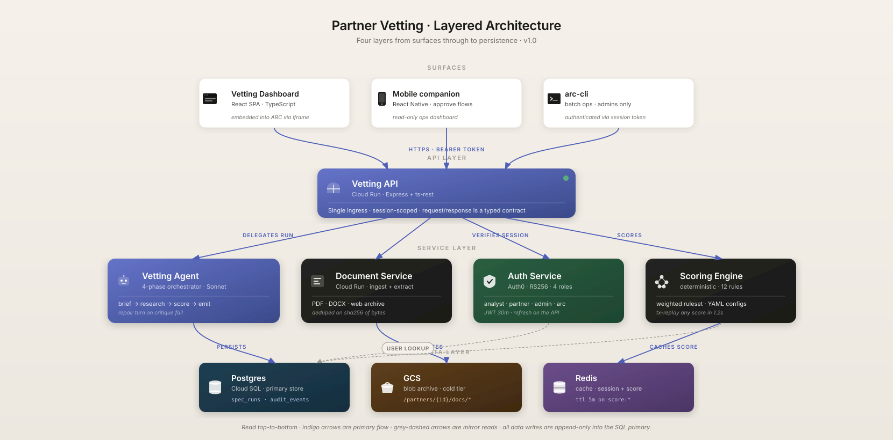
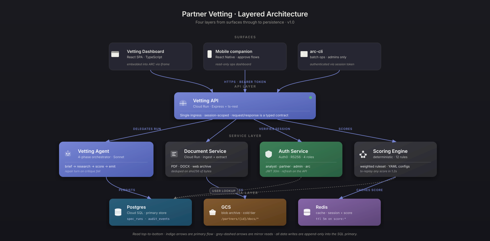
Five left-to-right stages with numbered tokens, hero cards, and dim reference cards below showing the typed output each stage emits. Demonstrates stage.numbered-token, card.reference for output rows, and the on-line pill label (zone C) used for the bounded feedback loop.

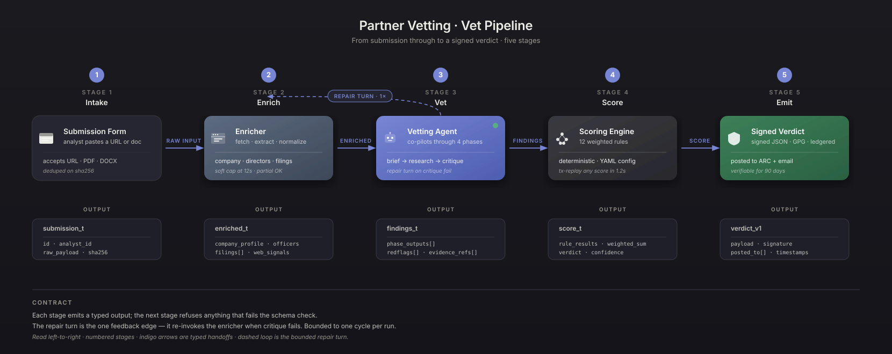
Five vertical lanes, lifelines, activation boxes on the active actors, sync calls paired with returns. Exercises the no-rotation rule — every label horizontal even though messages span the full canvas width.
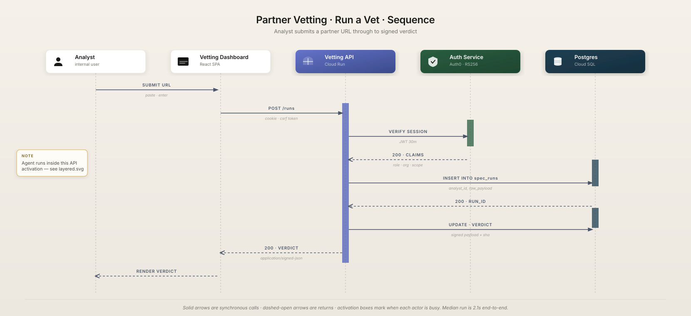
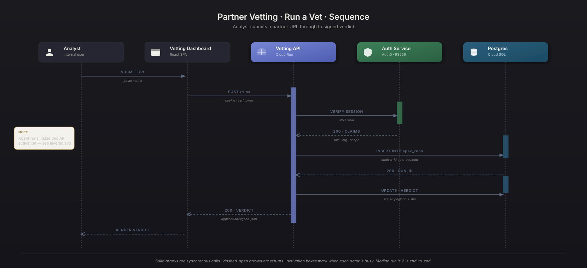
The outer boundary view: who uses Partner Vetting and what it connects to. External integration tiles, trust boundary, light cards on cream / mid-tone on dark.
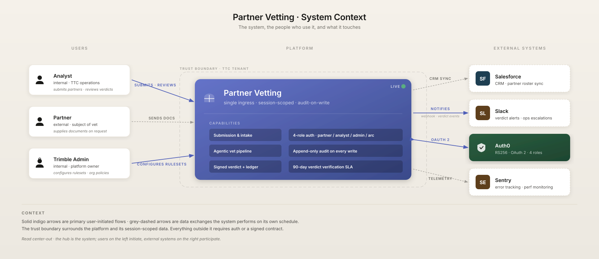
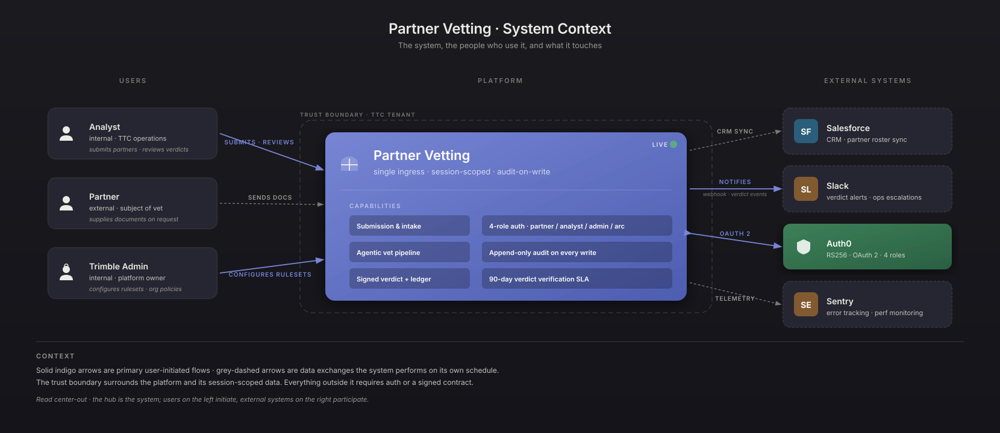
ER view of the proposal's entities. Reference cards (many), bidirectional relationships, type rows.
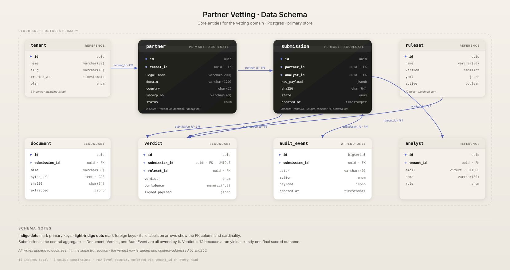
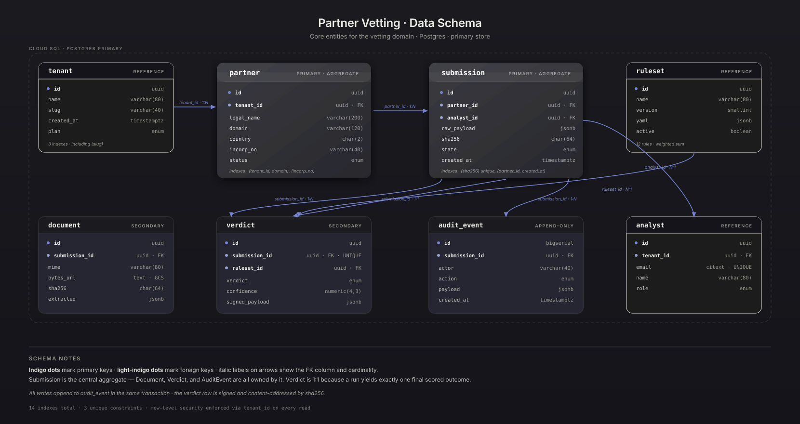
Cloud topology: VPC, regions, load balancers, services, data tier. Nested group boundaries; the full icon palette.
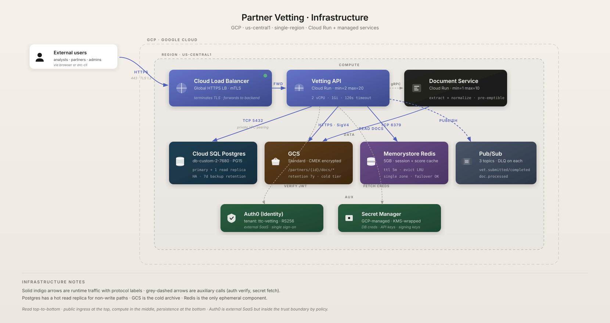
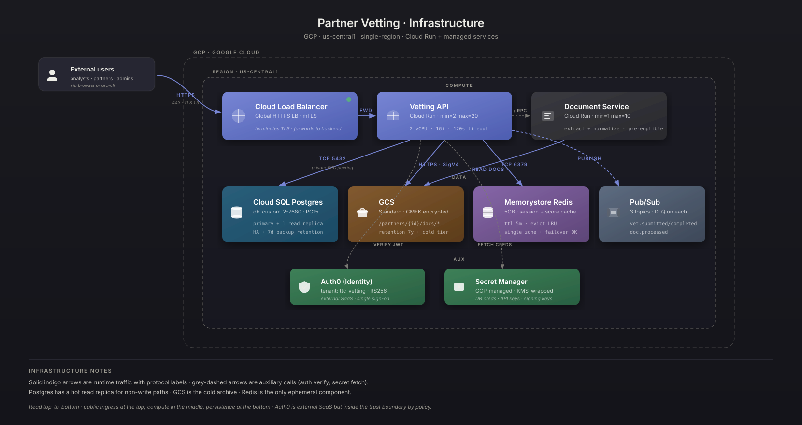
Pub/Sub topology: producers → topics → consumers. Trunk collapse when 5+ events fan out.

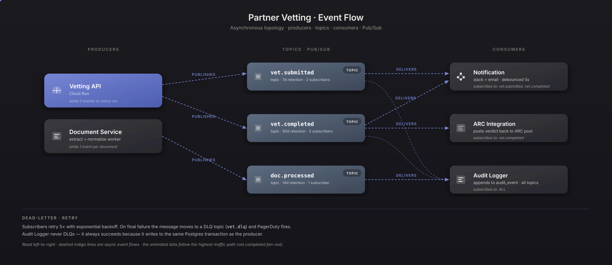
Vetting API at hub, third-party integrations on spokes. Compact cards; monogram fallback for the long tail.
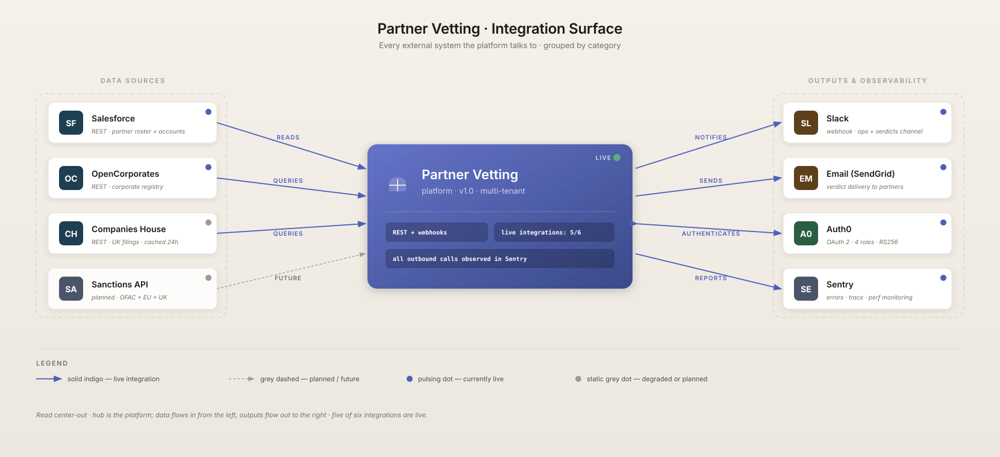

The catch-all. Demonstrates the decomposition procedure — nouns → cards, verbs → arrows, groupings → boundaries.
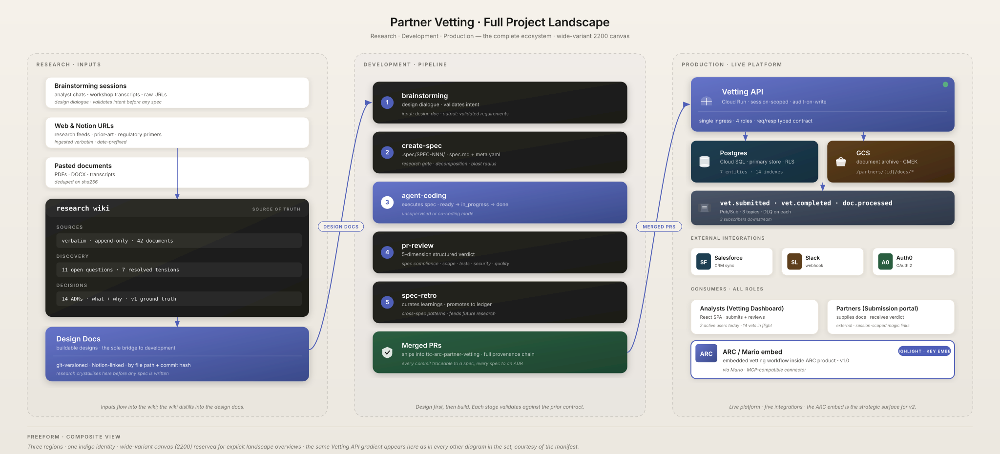

Open every example side-by-side and the same proposal reads the same way — in either theme. The manifest pins service → gradient-id, service → icon, label spelling; the theme pass swaps gradient stops + filter bodies. Identity is theme-agnostic; appearance is theme-specific.
| Service | Label | Gradient (id, theme-agnostic) | Icon |
|---|---|---|---|
| Primary API | Vetting API | --surface-primary | icon.gateway |
| Active agent | Vetting Agent | --surface-primary | icon.agent |
| Web frontend | Vetting Dashboard | --surface-light · light card | icon.browser |
| Auth provider | Auth Service | --surface-secure | icon.oauth |
| Primary database | Postgres | --surface-sql | icon.sql |
| Blob storage | GCS | --surface-store | icon.bucket |
| Cache | Redis | --surface-cache | icon.cache |